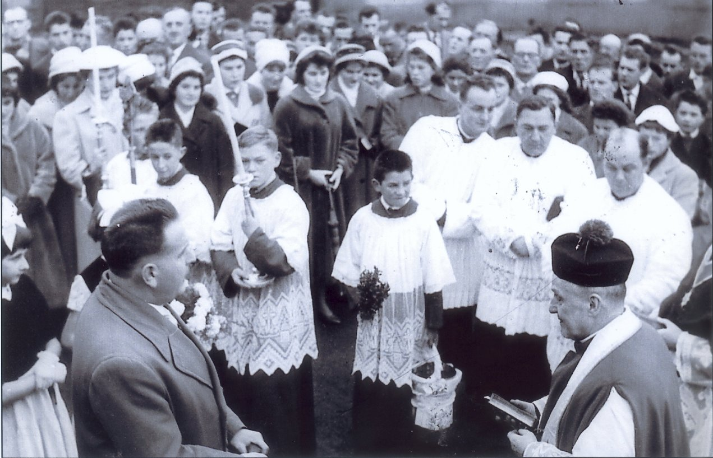

L’Église de Rouhling
La construction
Comme déjà mentionné précédemment, il y avait déjà en 1370 une église paroissiale de l’archiprêtré Sankt-Arnuald à Rouhling. Et d’après le genre de construction, elle devait dater du 12 ou 13ème siècle. La localité de Rouhling fut presqu’entièrement détruite pendant la guerre de trente ans, et de l’église, il ne resta que la base du clocher. Lors de la reconstruction après la guerre de trente ans, une « église-grange » sans style, fut bâtie.
Elle avait un aspect médiéval avec une ouverture faite de colonnettes avec chapiteaux sobres et arcades géminées de style paléo roman. Son toit en bâtière était couvert de tuiles et les extrémités étaient surmontées de faîteaux en forme de croix stylisées.
La nef était très petite et inconfortable (une centaine de mètres carrés) et ne contenait pas de bancs. Elle ne pouvait accueillir tous les fidèles dont une partie assistait aux offices en se tenant sur le parvis.
Ce sont cette promiscuité et ces conditions d’inconfort qui ont poussé la municipalité à engager des travaux de rénovation et d’agrandissement. En l’an 1834, celle-ci fut prolongée pour atteindre le double en longueur, sans architecte, contre la volonté du curé et celle de l’évêché.
Un quelconque entrepreneur a effectué les travaux d’agrandissement en harmonie avec ce qui existait. Comme une église doit avoir une sacristie, on l’a rajoutée à l’arrière. Depuis l’entrée jusqu’à la sacristie, elle mesurait 27 mètres de long, 8 à 9 mètres de large et 7 à 8 mètres en hauteur.
L’intérieur ne correspondait pas au vilain aspect extérieur : le plafond était demi voûté, partagé par des lignes et des cordons, agrémentés par un très riche enduit de stuc (44). En 1926, la peinture intérieure fut refaite, si bien qu’elle eut une apparence ravissante.
C’est ainsi qu’en 1834, une pierre millésimée de 1336 a été mise à jour dans les murs du chœur de l’église. Le complexe principal de l’actuelle église a été édifié lors de la reconstruction de tout le village. L’art de construire ressemble d’ailleurs à celle de cette époque.
Le premier prêtre était Hubert CHARLIER : 1697-1724. Les actes paroissiaux de son office ne parlent pas de la construction de l’église, mais uniquement d’une inauguration d’une cloche en 1722 par l’archiprêtre PARANT de Farschviller.
Le « Patronatsrecht » était exercé au XVIème siècle par un noble du nom de Johann von Bimtenbach (Brintenbach). Depuis 1625, les seigneurs de KERPEN étaient en même temps suzerains (Lehnsherren).
Ainsi, étant titulaire du « Patronatsrecht » à cette époque, les seigneurs de KERPEN firent construire l’église.
44.Le stuc est à la base un enduit imitant le marbre composé de plâtre fin, de colle (animale ou végétale), et de poussière de marbre (ou encore de brique par exemple). D'autres matériaux peuvent être mélangés pour fabriquer du stuc : la chaux qui remplacera le plâtre ; du marbre blanc (en grain très fin) ; et de la craie.
En 1736, elle a été consacrée par l’archiprêtre GEORGI, curé de Bebelsheim. Est-ce parce qu’elle a été agrandie ou restaurée à cette époque, la question se pose. Pendant 100 ans, on se contenta de cette petite église. Comme aujourd’hui encore dans les missions, seule une petite partie des personnes présentes pouvaient assister à la messe à l’intérieur de l’église.
Quand, après la révolution des dispositions modernes et libérales attirèrent les ruraux, on ne voulut plus se satisfaire des anciennes conditions. La commune insista pour que soient construites une église et une école. Mais, où prendre l’argent nécessaire ?
Les conseillers municipaux voulurent, ni vu ni connu, couper court en s’octroyant et mettant aux enchères le « Bouvrot » et notamment les biens de l’église qui avaient échappés lors de la révolution aux spoliations de l’État.
Le curé de cette époque, Pierre OHLIG (1825-1834), ainsi que l’évêché s’opposèrent à cette exigence. Il y eu de violentes confrontations entre le conseil municipal et les autorités de l’église.
Il existe des décisions du conseil municipal des années 1831-1834, qui présentent des échantillons de comment un maire et un conseil municipal peuvent « enguirlander » (abkanzeln) son éminence l’évêque et même le ministère du culte quand ceux-ci ne leur sont pas dociles. Cela alla si loin que le prêtre a été muté.
La commune agrandit alors l’église de sa propre initiative. On réunit 2400 francs dans le village, les cultivateurs réalisèrent des corvées particulières pour les dirigeants (die Fuhren). Aucun architecte n’a été utilisé. La construction se fit sans plan et sans suivi d’expert. De là provient l’aspect extérieur inesthétique de l’église. Elle n’eut pas un véritable chœur. Le tout fut réalisé sous forme d’un trapèze et, derrière fut accolé une sacristie comme un grand four à une ferme.
Le 03 octobre 1834, l’église rénovée a été consacrée par le vicaire SCHNEIDER, résidant de Lixing-lès-Rouhling selon l’autorisation orale, non de l’évêché, mais de l’archiprêtre de Sarreguemines. Et la première messe y fut célébrée le 12 octobre de la même année.
L’intérieur de l’église a conservé le style grange (Scheunenstil). En 1904, l’abbé MATHIS fit poser l’actuelle dalle renaissance contre l’avis de l’évêché.
Le vicaire générale WEISSLINGER, un enfant de la paroisse et ainsi bien au courant de la situation locale, a refusé à deux reprises les autorisations parce qu’il a été d’avis qu’au préalable qu’il fallait récolter plus d’argent afin de pouvoir construire quelques années plus tard une toute nouvelle église puisque l’édifice avaient été gâché lors du premier agrandissement.
L’abbé MATHIS se lança malgré tout dans les travaux, mais dû à nouveau les arrêter sur ordre épiscopal, alors que la nef était quasiment terminée. L’erreur était faite à présent, la maison de Dieu ne pouvait pas rester ainsi.
En 1908, le curé MEYER, successeur de MATHIS, a eu le droit de terminer l’ouvrage commencé, en apposant des stucs dans le chœur. Grace à la mise en peinture de 1926 par M. KLING, peintre à Haguenau, l’intérieur contrairement à l’extérieur eut une allure plaisante.
Le Clocher
Seul le clocher de Rouhling témoigne encore des temps anciens. Jusqu’en 1924, il était le seul, avec celui de l’église-mère de Farschviller, à avoir encore un toit à deux pentes couvertes de tuiles. D’après l’avis d’experts, il n’avait rien d’extraordinaire, ni du point de vue architectural ni d’esthétique. La partie supérieure datait de la fin du 19ème siècle ou du début du 18ème siècle. L’étage inférieur était très solide et datait de la fin du 17ème siècle : des petites pierres étaient pratiquement plongées dans un très bon mortier de chaux.
A l’étage supérieur, on a trouvé des tronçons de colonnes avec de petits chapiteaux sous sculptures d’un style paléo roman qui provenaient sans doute des anciens abat-sons qui étaient doubles comme encore aujourd’hui ceux de la vieille église de Zetting.
Mis à part son âge et sa forme spéciale qui étaient bien intégrés à l’image de tout le village, il n’est pas dommage qu’il ait été abattu. Monseigneur BENZLER a donné occasionnellement son avis : « Il est vénérable mais pas beau ! ». La démolition débuta au printemps 1924. En automne se dressait déjà son beau casque en forme d’oignon. Il n’était pas encore entièrement terminé lorsque ses nouveaux habitants arrivèrent : 4 nouvelles cloches.
Le 20 septembre eut lieu l’inauguration du clocher avec un afflux des hommes de la région car, en liaison avec cette bénédiction, eut lieu une manifestation contre l’annonce faite par le premier ministre HERRIOT d’introduire les lois laïques en Alsace-Lorraine.
L’abbé GOLDSCHMITT de RECH tint le discours de protestations. Le Chanoine JUNG de Metz, un enfant de la paroisse, procéda à la bénédiction du clocher. Il en fit de même le lendemain avec les cloches où la cérémonie dans l’église était encore plus solennelle.
L’abbé Nicolas FERSING de Hilsprich, aussi un enfant de la paroisse, prononça le sermon de fête. Pour le clocher et les cloches, 115 000 francs furent dépensés en une année.
Les Chapelles latérales
L’église ne doit pas seulement le bel aspect de sa façade au clocher neuf, mais aussi aux deux aménagements sur ses côtés.
La chapelle de droite était destinée à devenir un baptistère mais fut transformée en chapelle de Sainte-Thérèse lorsqu’une statue de la petite sœur de Lisieux fut offerte anonymement. Son autel fut offert par les filles de la paroisse. Cette chapelle eut un autre décor historique : Monsieur Joseph SIEBERT d’ici, peignit un tableau avec les noms des prêtres affectés antérieurement à la paroisse pour conserver leur souvenir d’antan plus que des tombes de prêtes ont dû être sacrifiées lors de la construction du nouveau clocher.
La chapelle de gauche fut utilisée comme cage d’escalier et ainsi disparut, à l’intérieur de l’église, le disgracieux et gênant escalier de l’orgue. Pour donner un cachet extérieur, le Conseil de Fabrique fit rénover le mur entourant le cimetière et le dota d’un portail et d’un grillage et régla aussi les frais de pavage devant et autour de l’église.

Fenêtre
L’aménagement de l’église comporte aussi l’installation de vitraux et de dallage. Les vitraux actuels furent acquis par l’abbé MATHIS vers 1893 pour 1 200 marks (société JANIN de Nancy). Les instantanés étaient bien choisis. Au début, l’exécution semblait bonne mais bientôt les couleurs claires s’estompèrent, surtout côté Nord et déformèrent les médaillons devenus méconnaissables.
Dallage
En l’an 1862, l’abbé GROTZINGER Antoine voulait faire poser des dalles en grès dans le chœur. Il est heureux que son idée ne trouvât pas de réalisation. L’abbé EMEL fit poser en 1867 les carrelages en mosaïque de Mettlach dans le chœur et la nef ; ils sont toujours présents et ont coûté plus de 1 000 francs (11,75 francs le m² du chœur, et 9,75 francs le m² de la nef.)
Le Mobilier
Encore un mot sur le mobilier principal de l’église. Les autels latéraux sont les plus vieux. Il n’est pas possible d’indiquer quel est leur âge ni d’où ils proviennent. Comme ils sont disproportionnés dans leur hauteur, il est à présumer qu’ils viennent d’une église plus grande. Ils étaient à l’opposé du maître-autel qui est sculpté dans du bois de chêne.
Dans sa forme et dans son style, il y avait une grande ressemblance avec celui de Grosbliederstroff. L’abbé EMEL qui a fait démolir cet autel en 1865 ne lui témoignait pas beaucoup d’estime en disant : « l’ensemble de ce meuble était disgracieux et l’on ne comprend pas comment Monseigneur l’Évêque dans sa visite pastorale n’en avait pas ordonné la suppression ».
Cependant les paroissiens tenaient à ce « monstrueux autel ». Il atteignait le plafond et présentait au-dessus du tabernacle une grande niche qui abritait encore la statue en bois de Saint-Etienne sculptée d’un seul bloc. Il est à supposer que l’abbé EMEL ne lui avait pas attribué cette mauvaise appréciation pour justifier sa disparition mais parce qu’il était vraiment délabré et qu’il présentait mal.
Aujourd’hui on pourrait hésiter à lui donner raison. L’autel actuel est en marbre tirant vers le rouge, sans style. L’abbé EMEL l’a acquis pour 300 francs dans l’église Saint-Maximin à Metz où cet autel sans style a été liquidé pour faire place à un nouveau mieux stylé. Transport, démontage et remontage compris il revint à plus de 1 000 francs.
Il eut été souhaitable que l’abbé EMEL eût ajouté un peu d’argent pour acquérir quelque chose de mieux. En l’année 1868, le chœur et la nef furent séparés par une cloison intermédiaire derrière les autels latéraux et par la construction d’un arc reliant ces cloisons devant le chœur.
A cette occasion les autels latéraux furent rendus moins hauts. Il est possible qu’après cette transformation ils apparaissent plus coquets que jadis où ils atteignaient aussi le plafond. Mais on remarqua très nettement qu’ils avaient été rafistolés. C’est à un avenir heureux qu’il appartiendra de se procurer des autels plus stylés.
Les bancs de l’église
En entrant à l’église on remarque immédiatement les bancs d’un aspect trop simple. On ne peut pas dire non plus qu’ils sont pratiques. Le maître menuisier ICHTERHERZ de Bitche les a fournis en 1862 sous le ministère de l’abbé GROTZINGER. Le banc a coûté 25 francs. (1 225 francs au total). Les bancs du côté droit de la tribune de l’orgue ont été achetés en 1924 et mis en place par le charpentier Nicolas TONI de Rouhling pour 150 francs par banc.
En l’année 1931, on a commencé par acquérir des beaux bancs pour le chœur. Encore la même année, le parquet de la nef fut rénové et de beaux bancs neufs en chêne furent acquis et livrés par la société AUBERTIN d’Elvange.
Contrairement aux bancs, la chaire se fait remarquer par ses riches sculptures. Elle est l’œuvre de l’institut d’Art HELLIG d’Haguenau. Elle a coûté 1 500 marks en l’an 1905.
Pendant les 3 ans de présence de l’abbé FICK (1884 à 1887), l’intérieur de l’Église eut un tout autre aspect. Il fit poser l’actuelle belle boiserie dans le chœur. La vieille fut rénovée et utilisée en meilleure présentation dans la nef.
Le banc de communion en bois fut remplacé par l’actuel en fonte moulée. C’est aussi à lui que l’église doit le chemin de croix en relief de terra cota.
L’Orgue
Un objet de soucis constants, était l’orgue de l’église. En l’an 1835, l’abbé MARTINÉ fit appel à la générosité de ses paroissiens en vue de l’achat d’un nouvel orgue. Il était musicien et aimait un chant digne. La quête rapporta 1 600 francs. L’orgue fut acquis, mais déjà en l’an 1861, une révision de fond en comble fut nécessaire. On en profita pour rajouter 2 nouveaux jeux. Coût : 470 francs, mais cette réparation ne fit pas longtemps ses preuves. En l’an 1870, l’abbé EMEL fit changer tout le mécanisme.
L’orgue fut retourné vers la nef et la tribune fut prolongée de 70cm vers l’avant et une flûte 8F fut implantée. Coût circa 1 000 francs.
Après 38 ans, il fut trouvé inapte au service. L’abbé MEYER s’adressa en 1908 au facteur d’orgue STAUD de Puttelange-aux-Lacs qui livra un orgue tout neuf pour 6 155 marks. Le vieux meuble fut conservé et adapté au nouvel orgue.
Quand les tuyaux réquisitionnés pendant la guerre furent remplacés, l’orgue eut à nouveau un aspect agréable. Jusqu’à maintenant, il fonctionne toujours très bien.
L’Éclairage
Afin de donner à l’église une autre décoration pour qu’on puisse admirer sa splendeur, aussi dans une ambiance quelque peu obscure et surtout que les fidèles, lorsque la maison du seigneur resplendit dans la clarté de ses lumières, aient le pressentiment de la splendeur de la maison de Dieu et qu’ils soient ainsi stimulés à un plus grand zèle dans le service du seigneur.
Quatre lustres électriques ont été acquis en 1927 pour la somme de 3 700 francs. L’ensemble de l’éclairage électrique a coûté 8 000 francs.
O. A. M. D. G.
Abréviation du latin « Ad majorem Dei gloriam »
(Devise des Jésuites) soit : « Pour la plus grande gloire de Dieu ».
Le O est fantaisiste, peut-être pour « Opus » ?
En l’an 1928, les tuyaux d’orgue furent remplacés par des neufs et l’orgue fut doté avec eux d’une nouvelle soufflerie électrique : ventilateur + moteur de 0,5cv de marque MEIDINGER, provenant de Suisse. Prix d’achat en 1928 : 1 200 francs.
L’abbé FRIEDERICH Victor l’a cédé au curé de Vescheim le 21/09/1940 pour son église contre paiement de valeur égale suite à la solide stabilisation du franc après la guerre.
L’Eglise après 1940
5. Destruction et Reconstruction
(Traduction des écrits en allemand de l’abbé FRIEDERICH)
*Afin de respecter la continuité du thème de l’histoire du bâtiment de l’église, les paragraphes qui suivent se situaient chronologiquement à un autre endroit du livre de l’abbé FRIEDERICH, mais dans le but d’une meilleure compréhension ont été mis à la suite des précédents évènements. *
La destruction
Parmi les 34 églises se trouvant devant la LIGNE MAGINOT et qui ont été détruites par les opérations de guerre en 1940, se trouve aussi l’église de Rouhling. Elle a été touchée par des obus de gros calibre qui ont sévèrement démoli la charpente. Elle ne s’est pas effondrée de suite, mais seulement après un ou deux mois, pendant lesquels il pleuvait beaucoup.
La partie centrale de la nef s’effondra si bien que les décombres du plafond et les poutres de la charpente avec les tuiles recouvraient les bancs. Restaient debout le toit du chœur percé de mitrailles et d’obus et le toit de la sacristie ainsi que la partie du toit au-dessus de la tribune de l’orgue.
Le nouveau clocher n’avait subi que peu de dommages : les cloches et l’horloge restèrent intactes. Comme maintenant l’ouvrage de plusieurs générations pour lequel le peuple des croyants a consenti de nombreux sacrifices et auquel toute la population était attachée de tout cœur, est détruit, je veux donner une description de l’église et de son mobilier tel que nous l’avons laissé le 01/09/1939 (une brave dame m’a confié qu’elle a pleuré plus pour les ruines de l’église que pour sa maison démolie). Les générations futures s’intéresseront à cette description si elle aussi n’aura pas disparu !
L’église et le clocher se trouvaient au point le plus élevé des constructions du village qui est déjà presque déblayé. Ils étaient entourés du cimetière. Après les cérémonies les gens se rendaient régulièrement sur les tombes de leurs proches pour y prier : réellement une belle coutume chrétienne catholique. Toutes les tombes étaient dotées d’une stèle parmi lesquelles il y en avait de très belles : un culte des morts très lorrain !
Les cloches et le clocher
Le clocher n’a été construit qu’en 1924 d’après les plans de l’architecte communal Edmond GRESSER de FORBACH en style renaissance. Les angles du bâtiment, les corniches, l’encadrement du portail et des fenêtres étaient en grès blanc.
L’entreprise Sido CADARIO, un italien marié à Rouhling a très bien exécuté les travaux. La charpente a été réalisée par Jean TONI de Rouhling. Ses collaborateurs étaient son frère Jean-Pierre, Rodolphe WARY et PHILIPPE Jean, tous de Rouhling.
La couverture fut exécutée par Wilhelm HERRMANN de Sarre-Union qui fit aussi les travaux de ferblanterie.
La même année, quatre nouvelles cloches furent acquises : mi = 1125 kg, sol = 658 kg, la = 467 kg, si = 340 kg, en provenance de la fonderie de cloches FARNIER à Robécourt dans les Vosges.
Avec le clocher, une chapelle latérale fut érigée à droite en vue de recevoir les fonts baptismaux mais plus tard un autel avec la statue de Sainte-Thérèse de l’Enfant Jésus y fut érigé. Pendant la guerre, cette chapelle fut aussi touchée par un obus.
L’autel et la statue de Sainte-Thérèse fut décapitée par un individu brutal et inculte portant l’uniforme de la « Arbeitsfront » nazi.
Dans cette chapelle fut affiché un tableau reprenant les noms de tous les prêtres ayant officié à Rouhling depuis 1693 et même avant.
Côté gauche, dans cette construction annexe se trouve l’escalier de la tribune de l’orgue.
Nos cloches actuelles
En 1924 tout Rouhling était fier de son beau clocher et de ses 4 nouvelles cloches et pensait en avoir pour des générations. C’était sans compter avec la guerre, les destructions, la confiscation des cloches comme en 1917 et les difficultés à reconstruire et à remplacer tout ce qui avait été détruit et spolié.
Un jour de deuil
Lorsqu’en janvier 1943, la nouvelle parvint que les cloches de Sarreguemines avaient été réquisitionnées, on savait que le tour de Rouhling viendrait bientôt. Ce fut fait le 29 avril de la même année. Les trois plus grandes furent décrochées et descendues par l’ouverture aménagée à l’intérieur du clocher, par un professionnel, le fondeur Andréas HAMM de Frankenthal. Celui-ci assura également le transport par camion à la gare de Sarreguemines et était également chargé par les autorités de dire que « le poids exact du métal confisqué serait payé… après la guerre. »
Elles étaient entreposées pendant quelques jours devant l’église ce qui permit aux rouhlingeois de venir leur dire "adieu". Il restait la plus petite consacrée aux Saints Anges Gardiens en 1924. Elle sera encore là, 11 ans plus tard, pour accueillir ses trois nouvelles consœurs. On se consolait à l’idée bien arrêtée que la guerre serait bientôt perdue pour ceux qui avaient osé mettre une main sacrilège sur des objets consacrés… comme ce fut déjà le cas en 1917 !
D’abord le clocher
La guerre finie, il y avait tellement à reconstruire et à acquérir que personne ne songeât au remplacement des cloches. Il y avait aussi deux autres obstacles : la lenteur administrative à régler les dossiers des dommages de guerre et … le clocher qu’il fallait d’abord remettre en état.
La réparation du clocher fut mise en œuvre en mars 1953. Entre temps il avait encore été décidé de rétablir la sonnerie ancienne en MI, SOL, LA, SI. Ainsi les trois plus grandes furent commandées à la société PACARD, fondeur à Annecy, avec le même poids que les anciennes confisquées, pour être en harmonie avec la petite restante.
Dans sa séance du 03 janvier 1954, le Conseil Municipal constata que les travaux du clocher étaient terminés et accepta le remplacement des cloches comme prévu, sans être concerné par le financement. En effet le Conseil de Fabrique disposait de 400 000 francs de dommages de guerre et de 700 000 francs de « dons ». Ainsi la France avait tenu la promesse de l’Allemagne nazie de payer le « métal » confisqué, mais pas les « cloches », un raisonnement spécieux !
Une réception grandiose
Il était d’usage, dans toutes les paroisses, déjà dans les années 1920, de réserver un accueil triomphal aux nouvelles cloches. C’était bien le cas à Rouhling en 1954. Trois chars tirés chacun par quatre chevaux et garnis somptueusement portaient les cloches :
-
le 1er avec l’abbé Nicolas EBERHART figurant le diacre Saint-Etienne et une oriflamme à l’effigie du Saint-Patron,
-
le 2ème avec l’abbé Joseph SCHWARTZ figurant Saint-Joseph,
-
le 3ème char avec la Vierge Marie avait été équipé non moins splendidement par la jeunesse de Cadenbronn, à qui Rouhling avait prêté main forte lors de la bénédiction de leurs cloches en 1950.
Toute la population se sentait concernée. Le cortège était formé en outre par la Musique Municipale, les Sapeurs-Pompiers, les Mineurs, la Chorale, les enfants de chœur, les communiants en aube blanche, le Maire et le Conseil Municipal, l’abbé COLLIN, curé, avec le Conseil de Fabrique et, bien sûr, les 41 couples de parrains et marraines.
Le dimanche 24 avril ce gigantesque et grandiose cortège se mit en route depuis la gare de Sarreguemines, en passant par Welferding et Grosbliederstroff pour arriver à Rouhling devant l’église.
Les trois cloches prirent place sur une estrade où la population défila pendant des heures pour les admirer de près et même les essayer…
Des chefs-d’œuvre
On pouvait y lire de nombreuses invocations sous les effigies des saints auxquels elles étaient consacrées et admirer la finesse des sculptures et des décorations.
Voici une des inscriptions de base, aujourd’hui difficilement lisible en raison des salissures accumulées tout au long des années :
ANNO SALUTIS MCMLIV JUBILEI CONCEPTIONIS
IMMACULATAE BEATAE MARIAE VIRGINIS,
PIO XII, SUMMO PONTIFICE.
JOSEPHO JOANNE HEINTZ, EPISCOPO METENSIS,
VICTORE COLLIN, PAROCHO,
JOSEPHO EBERHART, CIVIUM MAGISTRO,
EX MUNIFICENTIA CHRISTI FIDELIUM PAROCHAE
CUM DUABUS SORORIBUS MEIS A PACCARD ANNECY
FUSA, SOLEMNITER BAPTIZATA SUM
IN PAROCHIA ROUHLING
Traduction des inscriptions : En l’an du Salut 1954 à la Fête de l’Immaculée Conception de la Bienheureuse Vierge Marie, Pie XII étant Souverain Pontife, Joseph Jean HEINTZ, évêque de Metz, Victor COLLIN, curé de la paroisse, Joseph EBERHART "Maître des Citoyens", (Maire) grâce à la générosité des fidèles du Christ de la paroisse, j’ai été fondue avec mes deux sœurs par PACCARD, Annecy et baptisée solennellement dans la paroisse de Rouhling.
La Cérémonie de Bénédiction du 02 mai
Le dimanche suivant elles avaient pris place à l’intérieur de l’église pour la bénédiction solennelle. Celle-ci fut donnée par Monseigneur LOUIS, Vicaire Général de l’Évêché et Protonotaire Apostolique en présence de nombreux prêtres des villages voisins ou originaires de Rouhling et de toute la population.
Monseigneur LOUIS faisant allusion à la sonnerie des cloches lors des célébrations de baptêmes, mariages et enterrements, a porté l’inscription suivante dans le registre paroissial :
Puissent-elles être, le trait d’union de toutes les « unions futures », s’associer à la joie des nouveaux membres « naissant » à l’église du Christ et prendre part à la tristesse des fidèles quand un des leurs « quitte » cette terre et est appelé à la Maison du Père.
Les Sonneries
Le rôle principal des cloches d’église est l’annonce des offices. « Je vous appelle afin que ma maison se remplisse ». Une autre sonnerie quotidienne, matin, midi et soir : c’est l’Angélus. Les autres occasions classiques sont les mariages, baptêmes et enterrements.
Pour les défunts on sonne le « glas funèbre » après l’Angélus de midi. Le « glas du soir » a été supprimé à Rouhling, il y a bien des années, sans doute jugé trop lugubre à la tombée de la nuit. Jadis, il était d’usage de sonner le glas pour un mourant, pratique depuis longtemps abandonnée.
A également été abandonnée, la sonnerie lors de « l’élévation », à la messe dominicale à l’intention des fidèles ne pouvant assister à l’office.
Les deux sonneries « laïques » ont aussi disparu :
-
le « tocsin » : une sonnerie saccadée, pour donner l’alerte, surtout en cas d’incendie ou quand jadis, des troupes de soldats pilleurs s’approchaient du village. Il a été remplacé par la sirène.
-
la sonnerie pour orienter les voyageurs égarés, en cas de brouillard du soir, très utilisée en régions montagneuses.
Sans vouloir rivaliser avec les merveilleux Carillons de FLANDRE (une cinquantaine de cloches à Anvers, Gand, Bruges…) qui permettent d’exécuter des airs complets, on peut, avec un jeu de 4 ou 5 cloches, déjà composer des mélodies simples, tel le classique « Ave Maria de Lourdes ».
Mais les sonneries les plus impressionnantes sont certainement celles qui marquent les grandes fêtes, comme, Noël et Pâques, ou encore celles marquant le « départ » et le « retour triomphal » lors du Silence de la Semaine Sainte.
Le rôle des cloches s’est singulièrement amenuisé de nos jours : l’éloignement des maisons souvent dotées d’une bonne isolation fait qu’une grande partie de la population n’entend pas les cloches sonner, sans parler de ceux qui ne se sentent nullement concernés.
Même les sonneries de l’horloge, sont pratiquement superflues, surtout depuis l’arrêt des travaux dans les champs. Et que dire des villages où l’on a enregistré des plaintes pour « tapage nocturne » à cause de l’Angélus du matin ! Il serait tout de même triste si cette sonnerie devait être supprimée dans notre « Communauté de Paroisses », maintenant qu’elle a choisi l’Archange Gabriel comme Saint-Patron, lui qui est « l’Angélus Domini » de l’Annonciation en personne !
Et bien à Rouhling s’est fait. Depuis avril 2015 les cloches restent muettes entre 22h00 et 07h00.
Inventaire du contenu de l’église
(Traduction des écrits en allemand de l’abbé FRIEDERICH)
En suivant la chronologie de son récit, l’abbé FRIEDERICH a rédigé un inventaire précis de tout ce qui se trouvait dans l’église avant sa destruction.
Mobilier
Le maître-autel était en marbres et fut, ces dernières années, doté d’un retable et décoré de jolis ornements en bronze. En harmonie avec le maître-autel, un banc de communion fut installé. Les autels latéraux étaient en bois et provenaient sans doute d’une église cistercienne. A l’origine, ils semblaient avoir été plus grands et la transformation sautait aux yeux ; ils étaient aussi abîmés.
Plancher et bancs étaient encore neufs et très beaux.
La chaire en bois était très richement décorée ; elle fut acquise en 1900
Le confessionnal était vieux, sans style inconfortable et abîmé.
L’orgue était aussi beau et bon avec sa double table de jeux et sa soufflerie électrique.
L’éclairage était constitué par 3 lampadaires électriques, un avec 3 ampoules et 2 avec respectivement 4 ampoules. Le chœur pouvait être éclairé d’une façon indépendante.
Statues
Derrière le maître-autel se trouvait une niche renfermant une statue de Saint Etienne orant, le patron de la paroisse (il vit le ciel ouvert…)
À droite dans le chœur, une statue de 1,80 mètres de haut du sacré Cœur de Jésus, à gauche le sacré cœur de Marie.
L’autel latéral de droite comportait une niche avec une statue de Saint Joseph et tout en haut dans une petite niche, Saint-Wendelin. Par contraste, on trouvait à gauche une statue de Notre-Dame de la Victoire et au-dessus Sainte-Anne.
A gauche de l’autel de la Sainte Vierge, il y avait un relief de terra cotta représentant la vierge tendant un chapelet à Saint-Dominique.
En face de la chaire se trouvait une belle croix de mission qui ne fut pas endommagée.
En dessous se trouvait la Sainte famille aussi en terra-cotta, parce qu’il n’y avait pas de place ailleurs.
Sur les murs latéraux se trouvait :
Notre-Dame de Lourdes, côté gauche et à droite Saint-Antoine avec l’enfant Jésus sur son bras
Derrière sur la tribune de l’orgue, une statue de Saint-Etienne, debout, tenant la palme du martyre.
Il faut encore citer le chemin de croix très beau en relief de terra-cotta avec de riches cadres en bois. Lors de l’effondrement du toit de l’église, la plupart des statues furent endommagées.
Fenêtres
Les 2 fenêtres du chœur sont tenues en couleur tapisserie sans figures de Saints.
De même, les 2 fenêtres à l’arrière qui sont percées pour une vue sur la tribune de l’orgue.
Les stalles du chœur ne sont pas visibles depuis la nef en raison des parois où sont adossés les autels latéraux.
La fenêtre à droite, devant, représentait la première communion de Saint Aloyse de Gonzague.

La fenêtre à droite, au milieu, représentait une scène de vie de Saint-François d’Assise, quand un loup domestiqué lui mangeait dans la main alors qu’il avait causé beaucoup de malheur dans la région d’Assise, et encore d’autres souvenirs du Saint en tant qu’ami des bêtes.
La fenêtre à droite, derrière, représentait des scènes analogues de la vie de Saint-Antoine de Padoue. Dans ces deux dernières fenêtres, les couleurs claires sont effacées si bien que les scènes représentées étaient embrouillées.
La fenêtre à gauche, devant, représentait l’assomption de la Vierge, pas très bien exécutée.
La fenêtre à gauche, au milieu, représentait Sainte-Thérèse d’Avila avec un rouleau de parchemin à la main (signe de virginité)
La fenêtre à gauche, derrière, représentait la décapitation de Sainte-Barbe par son propre père qui fut foudroyé.
Ces images aussi étaient partiellement effacées. L’encadrement de toutes ces images n’était pas vilain mais manquait d’élans. Le reste de la surface des images était tenu dans de banaux motifs de tapisserie.
Le cadrage de plomb des parcelles était aussi déficient et M. le Curé envisageait leur remplacement.
Sacristie
La sacristie, dans sa construction était totalement asymétrique et appuyée disgracieusement à l’arrière du chœur de l’église. Sa toiture était le prolongement de la toiture de l’église et descendait très bas en défigurant l’église qui n’était déjà pas très belle.
Par contre, son intérieur était d’autant plus beau ; le buffet des ornements posé en face de la porte d’entrée était particulièrement pratique : la table pour présenter les ornements était large et huit tiroirs pour accueillir le linge d’autel et de calice ; au-dessus des armoires pour recevoir les nappes d’autel, les aubes, vêtements des enfants de chœur. A droite et à gauche du buffet, il y avait des armoires qui arrivaient jusqu’au plafond.
En plus, il y avait une armoire pour les chapes de chœur et au-dessus, pour recevoir les lampions. Un escalier, discrètement revêtu donnait accès au grenier au-dessus de la sacristie : celui-ci était assez vaste pour permettre d’entreposer toutes sortes d’objets tels les lampadaires non utilisés.
A droite de la sacristie il y avait la chaufferie avec un système d’air pulsé de type FERNERY. Une petite porte menait de la sacristie à ce local d’où on pouvait sortir par une porte plus grande. Église et sacristie sont endommagés si gravement par faits de guerre, suivis d’intempéries qu’une réparation n’est pas à envisager. Elle n’est même pas souhaitable.
Le mieux serait une reconstruction dont le style devait être adapté à celui du clocher. L’établissement de plans pour cette reconstruction serait de préférence à confier à M. GRESSER, architecte des communes à Forbach, qui a réalisé le clocher et qui a beaucoup d’expérience dans le domaine.
Ornements
Les chasubles présentes étaient :
En tissu doré : trois dont une très belle assortie aux chapes, dalmatiques et velum de bénédiction.
En rouge : quatre dont une richement ornée en velours et une neuve en soie.
En blanc : quatre dont une en brocart représentant le christ-roi et une autre qui représente la communion de Saint-Jean.
En vert : trois, aucune n’est extra
En violet : trois dont une en soie richement décorée et une autre neuve.
En noir : trois dont une bien assortie aux dalmatiques.
Dalmatiques, il en existait trois paires
En tissu dore – 1 neuve et belle
En rouge – 1 ancienne
En noir – 1 riche et belle
Chape, onze en tout
En tissu doré : une riche et une autre plus vieux mais encore bonne
En rouge : deux dont 1 riche et neuve en velours, l’autre plus vieille, en soie
En blanc : trois, toutes bien conservées dont une presque neuve
En vert : une déjà vieille
En violet : une, tissu vieux, pavois et caducée neufs
En noir : deux dont une très riche et neuve, l’autre vieille et usée.
Velums de bénédiction, cinq en tout
En tissu doré : deux dont un neuf assorti à la chape n°1, l’autre assorti à la chape n° 2
En blanc : trois dont un en soie jaunâtre, un autre encore neuf, le troisième déjà vieux.
Velums de tabernacle
Grand format, un doré, vieux, un en rouge, un en blanc
Petit format : un doré, neuf
Trois en blanc, Un en vert, Un en rouge, Un en violet.
En tissu blanc et tissu de sacristie, la paroisse de Rouhling était aussi richement dotée. Une grande quantité fut sauvée par le clergé mobilisé et transportée à Morhange. Tout ce qui a été sauvé et répertorié, mais malheureusement pas tout.
De nombreuses aubes, surplis pour prêtres et enfants de chœur étaient présents. La plupart avait été confectionnés par des filles de la paroisse : trois ou quatre aubes, surplis d’enfants de chœur, d’après un modèle unique.
Lors des processions de la Fête Dieu, quelque 25 ou 30 garçons pouvaient être habillés d’une façon belle et solennelle avec des soutanelles rouges et des surplis blancs festonnés. Sans parler des vêtements ordinaires de ce genre.
La paroisse était aussi bien dotée en corporaux et lingerie de calice et ciboire. Il y avait aussi de nombreux palliums artistiquement décorés : la plupart a été sauvée mais pas tout, malheureusement.
Dais
Il existait un beau dais bien conservé côtés et toit étaient en riche tissu doré. Malheureusement, il n’a pas pu être sauvé. Les brocarts d’or tombèrent entre les mains des ouvriers nazis qui en découpèrent les symboles.
Étendards, deux grands
Un étendard blanc de la Sainte Vierge
Un rouge avec les représentations de Saint-Etienne, d’un côté et de Saint-Joseph de l’autre.
Ce dernier étendard était tellement déchiré qu’il fallait le brûler.
A part ça, il y avait encore une vingtaine de petits drapeaux avec des motifs eucharistiques destinés aux enfants lors des processions de la fête Dieu. Ils tombèrent aussi dans les mains de soldats dans la sacristie et ont été déchirés ou découpés.
Métaux (candélabres, chandeliers, …)La paroisse de Rouhling possédait encore certains métaux :
Trois garnitures de luminaires d’autel avec croix
Une garniture avec 6 lumières, relativement neuve, sans doute récemment redorée
Une 2ème garniture également dorée récemment, un peu plus âgée mais richement travaillée
Une 3ème garniture, simplement tenue mais fraichement nickelée. Cette garniture fut surtout utilisée au catafalque.
Trois garnitures de luminaires pour les autels latéraux
Une à 4 lumières pour chaque autel, dorés, assez neuve, grandeur moyenne
Une 2ème garniture avec 4 lumières pour chaque autel, dorée pas plus ancienne
Une troisième garniture à 4 lumières pour chaque autel latéral, simplement tenue, petite, dorée. Cette garniture a été partiellement perdue.
Luminaires du chœur, fixes
Deux à 9 bras, électriques, fixée aux piliers des 2 côtés du chœur
Deux à 7 branches pour maître autel avec des statues d’anges. Étaient aussi électriques.
Candélabres pour maître autel et autels latéraux
4 Serpents avec des lys et des épis - chacun pour 7 bougies
2 Plus haut et plus large - chacun pour 9 bougies
2 beaux larges et dorés récemment - chacun pour 7 bougies
4 de taille moyenne, élancés
4 plus petits - chacun pour 5 bougies
2 plus vieilles
6 luminaires de rampes
Parmi lesquels : 2 montants vers la droite, 2 montants vers la gauche et 2 en demi-cercle
2 luminaires de rampe réglables, pas très beaux ni très solides, en métal quelconque.
Niches d’expositions
Une en forme de baldaquin porté par des colonnes étroites garnie intérieurement avec de riches brocards argentés, extérieurement avec du velours rouge. (Manteau royal).
Une deuxième en forme de candélabre dont les extrémités portent une couronne royale.
Trois lustres électriques suspendus au-dessus de l’allée centrale
Au milieu avec 13 lampes dont une pendant vers le bas formant finale, 6 en biais éclairaient les bancs, 3 les parois latérales et 3 le plafond.
Devant et derrière il y en avait deux avec chacun 4 lampes, assorties à la grande du milieu.
Lampes perpétuelles : Une de chaque côté de l’arche du chœur accrochées avec une chaîne à un petit bras. Les deux renfermaient un verre à huile mais l’une d’elles était munie d’une petite ampoule électrique.
Croix portables pour processions : Une dorée et les deux autres en bois.
Lampes pour acolytes (2 paires) : Une dorée, une nickelée
A l’exception des lustres, tous autres métaux ont été sauvés et provisoirement stockés à Grosbliederstroff chez Mlle Catherine MEYER.
Niches d’exposition (deux) : Une en forme de baldaquin est endommagée et est restée dans la sacristie.
L’autre avec lis et épis, respectivement grappes de raisin avec une couronne : la plate-forme en bois manque.

Calices (3 étaient présents)
Le plus riche a été emmené en Charente et revint
Le deuxième, avec des jolis reliefs récemment dorés fut perdu
Le troisième, ordinaire, aussi neuf a disparu. Un identique se trouvant parmi les objets stockés à Morhange fut attribué à Rouhling.
Ciboires : Deux étaient présents et furent sauvés.
D’autre part, furent sauvés : Le plateau de communion - une custode de tabernacle - une relique de particule de la croix.
La particule elle-même a été récupérée par l’aumônier de garnison français, Nicolas SCHWARTZ, jadis curé de Hanweiler et Bisweiler qui l’a rendue plus tard, en avril 1941 au curé de la paroisse en même temps que le réservoir double avec l’huile des malades et le Chrisma (onction).
Raymond LEHMANN
Victor FRIEDERICH (curé)
Joseph WACK